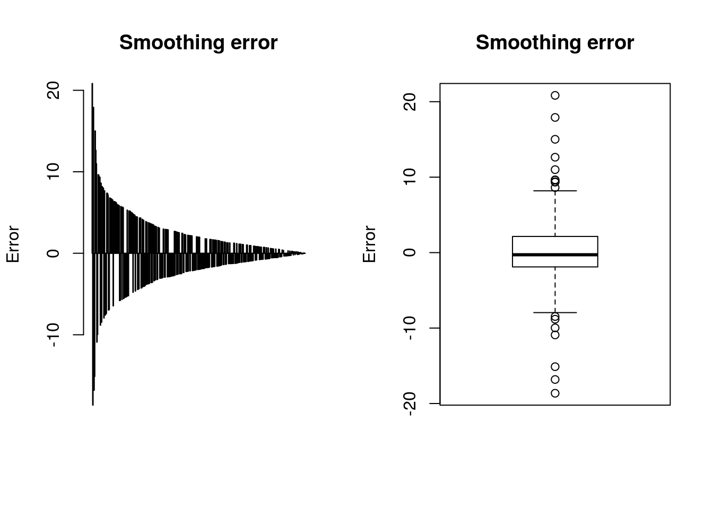
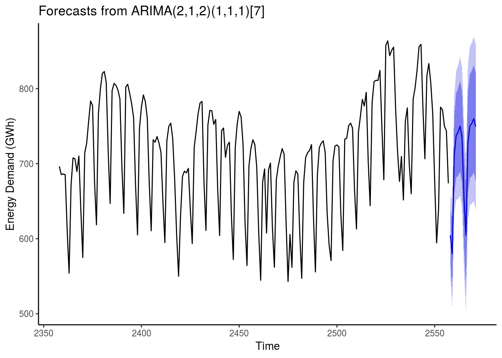

References:
- R. H. Shumway, D. S. Stoffer. Time Series Analysis and Its Applications. 2010.
- R. J. Hyndman. Forecasting: principles and practice. 2013.
- P. S. P. Cowpertwait, A. V. Metcalfe. Introductory Time Series with R. 2009.
Preamble:
This document focuses on an analysis of the energy demands of a European country.
The dataset of the daily energy needs (in GWh) between 2004 and 2010.
Reseach questions:
- build a model for energy demand forecasting using time series analysis.
Structure of analysis:
A time series forecast using the arima model as follows:
- Exploratory data analysis
- Data decomposition
- seasonal ARIMA model
- Forecast model
sourceURL <- 'https://gist.githubusercontent.com/Peque/715e91350f0e68e3342f/raw/d28312ac0e49888a5079fcea188770acaf3aa4a2/mme.csv'# download and load data into memory
tmp <- tempfile()
download.file(sourceURL, tmp, method = 'curl')
df <- read.csv(tmp)
unlink(tmp)Exploratory data analysis
head(df) date demand
1 01-01-04 488.07
2 02-01-04 582.02
3 03-01-04 575.58
4 04-01-04 542.39
5 05-01-04 600.26
6 06-01-04 544.76# convert date strings to POSIX dates
df$date <- strptime(df$date, format = '%d-%m-%y')
# day of week
df$day <- as.factor(strftime(df$date, format = '%A'))
# day of year
df$yearday <- as.factor(strftime(df$date, format = '%m%d'))
# structure for analysis
str(df)'data.frame': 3288 obs. of 4 variables:
$ date : POSIXlt, format: "2004-01-01" "2004-01-02" ...
$ demand : num 488 582 576 542 600 ...
$ day : Factor w/ 7 levels "Friday","Monday",..: 5 1 3 4 2 6 7 5 1 3 ...
$ yearday: Factor w/ 366 levels "0101","0102",..: 1 2 3 4 5 6 7 8 9 10 ...# df split to create test set
df_test <- subset(df, date >= strptime('01-01-2011', format = '%d-%m-%Y'))
df <- subset(df, date < strptime('01-01-2011', format = '%d-%m-%Y'))
ts <- ts(df$demand, frequency = 1)# df and time series objects
demandts <- xts(df$demand, df$date)
plot(demandts, main = 'Energy Demand Preview', xlab = 'Time', ylab = 'Demand (GWh)')Observations:
- A seasonal dependency of demand can be easily spotted in the graphics, although there are other factors that may affect the results, such as the temperature, holidays, weekends, etc..
# demand by day of the week
ggplot(df, aes(day, demand)) +
geom_boxplot(fill='slateblue', alpha=0.2) + xlab('Time') + ylab('Demand (GWh)') + ggtitle('Demand per day of the week') +
theme_classic()
Observations:
- During weekends, the demand decreases considerably compared to the rest of the week days.
# aggregating demand by day of the year (average)
avg_demand_per_yearday <- aggregate(demand ~ yearday, df, 'mean')
# computing the smooth curve for the time series. Data is replicated before computing the curve in order to achieve continuity
smooth_yearday <- rbind(avg_demand_per_yearday, avg_demand_per_yearday, avg_demand_per_yearday, avg_demand_per_yearday, avg_demand_per_yearday)
smooth_yearday <- lowess(smooth_yearday$demand, f = 1 / 45)
l <- length(avg_demand_per_yearday$demand)
l0 <- 2 * l + 1
l1 <- 3 * l
smooth_yearday <- smooth_yearday$y[l0:l1]
# plotting results
par(mfrow = c(1, 1))
# setting year to 2000 to allow existence of 29th February
dates <- as.Date(paste(levels(df$yearday), '2000'), format = '%m%d%Y')
plot(dates, avg_demand_per_yearday$demand, type = 'l', main = 'Average Daily Demand', xlab = 'Time', ylab = 'Demand (GWh)')
lines(dates, smooth_yearday, col = 'yellow', lwd = 2)Observations:
- During the winter & summer seasons the demand is clearly higher exept for, vacation periods. Holydays are also easily spotted in the graphics, being the lowest peaks of demand.
par(mfrow = c(1, 2))
diff <- avg_demand_per_yearday$demand - smooth_yearday
abs_diff <- abs(diff)
barplot(diff[order(-abs_diff)], main = 'Smoothing error', ylab = 'Error')
boxplot(diff, main = 'Smoothing error', ylab = 'Error')Observations:
- The graphics show the errors. Notice how the biggest errors are all negative.
head(strftime(dates[order(-abs_diff)], format = '%B %d'), 10) [1] "January 01" "December 25" "May 01" "January 06" "August 15"
[6] "December 08" "December 31" "October 12" "November 01" "December 26"The exact dates which are generating these errors are indeed, holidays or the day just before holidays (as is the case for the 25th November and 31th Devember).
par(mfrow = c(2, 2))
acf(df$demand, 100, main = 'Autocorrelation')
acf(df$demand, 1500, main = 'Autocorrelation')
pacf(df$demand, 100, main = 'Partial autocorrelation')
pacf(df$demand, 1500, main = 'Partial autocorrelation')Observations:
- The autocorrelation function shows a highly autocorrelated seasonal non-stationary process with, as expected, yearly and weekly cicles. The ACF alone, however, tells us little about the orders of dependence for ARMIA or AR processes. The PACF is better for AR models, and also shows the weekly and yearly seasons, although the correlation is lost faster with the lag.
Data decomposition
I’ll decompose the time series for estimates of trend, seasonal, and random components using moving average method.
The model is:
Y[t]=T[t]∗S[t]∗e[t]
where
Y(t) is the number of weeks at time t, T(t) is the trend component at time t, S(t) is the seasonal component at time t, e(t) is the random error component at time t.
# decomposition of weekly seasonal time series
wts <- ts(ts, frequency = 7)
dec_wts <- decompose(wts)
plot(dec_wts)
# demand minus week seasonal
df$demand_mws <- df$demand - as.numeric(dec_wts$season)# decomposition of yearly time series
yts <- ts(subset(df, yearday != '0229')$demand_mws, frequency = 365)
dec_yts <- decompose(yts)
plot(dec_yts)Observations:
- Decomposition of the yearly seasonal time series. 29th February days are excluded for frequency matching. The time series is formed out of the original observation minus the weekly seasonal data.
days365 <- which(df$yearday != '0229')
february29ths <- which(df$yearday == '0229')
df$demand_mwys[days365] <- df$demand_mws[days365] - as.numeric(dec_yts$season)
# Fill values on February 29th
df$demand_mwys[february29ths] <- df$demand_mws[february29ths]# form new ts from original observations less the weekly and yearly seasonal data
par(mfrow = c(1, 1))
ts_mwys <- ts(df$demand_mwys, frequency = 1)
demandts_mwys <- xts(df$demand_mwys, df$date)
plot(demandts_mwys, main = 'Energy Demand Less Seasonal Data', xlab = 'Time', ylab = 'Demand (GWh)')# aggregating demand by day of the year (average)
avg_demand_mwys_per_yearday <- aggregate(demand_mwys ~ yearday, df, 'mean')
# computing the smooth curve for the time series. Data is replicated before computing the curve in order to achieve continuity
smooth_yearday <- rbind(avg_demand_mwys_per_yearday, avg_demand_mwys_per_yearday, avg_demand_mwys_per_yearday, avg_demand_mwys_per_yearday, avg_demand_mwys_per_yearday)
smooth_yearday <- lowess(smooth_yearday$demand_mwys, f = 1 / 45)
l <- length(avg_demand_mwys_per_yearday$demand_mwys)
l0 <- 2 * l + 1
l1 <- 3 * l
smooth_yearday <- smooth_yearday$y[l0:l1]
# plotting the result
par(mfrow = c(1, 1))
# setting year to 2000 to allow existence of 29th February
dates <- as.Date(paste(levels(df$yearday), '2000'), format = '%m%d%Y')
plot(dates, avg_demand_mwys_per_yearday$demand_mwys, type = 'l', main = 'Mean Daily Demand', xlab = 'Time', ylab = 'Demand (GWh)')
lines(dates, smooth_yearday, col = 'yellow', lwd = 2)par(mfrow = c(1, 2))
diff <- avg_demand_mwys_per_yearday$demand_mwys - smooth_yearday
abs_diff <- abs(diff)
barplot(diff[order(-abs_diff)], main = 'Smoothing error', ylab = 'Error')
boxplot(diff, main = 'Smoothing error', ylab = 'Error')
Observations:
- Plotting the average daily demand of the demand less the seasonal data shows a new error rate much lower than the one seen before.
# new acf and pacf created
par(mfrow = c(1, 2))
acf(df$demand_mwys, 100, main = 'Autocorrelation')
pacf(df$demand_mwys, 100, main = 'Partial autocorrelation')seasonal ARIMA model
The initial ARIMA parameters have been found using the R \(auto.arima()\) function. The differencing parameter \(d\) is selected using the KPSS test. If the null hypothesis of stationarity is accepted when the KPSS is applied to the original time series, then \(d = 0\). Otherwise, the series is differenced until the KPSS accepts the null hypothesis. After that, \(p\) and \(q\) are selected using either AIC or BIC. The SARIMA model has been created using those ARIMA parameters.
model <- Arima(ts, order = c(2, 1, 2), list(order = c(1, 1, 1), period = 7))# forecast the error w/ test dataframe
auxts <- ts
auxmodel <- model
errs <- c()
pred <- c()
perc <- c()
for (i in 1:nrow(df_test)) {
p <- as.numeric(predict(auxmodel, newdata = auxts, n.ahead = 1)$pred)
pred <- c(pred, p)
errs <- c(errs, p - df_test$demand[i])
perc <- c(perc, (p - df_test$demand[i]) / df_test$demand[i])
auxts <- ts(c(auxts, df_test$demand[i]), frequency = 7)
auxmodel <- Arima(auxts, model = auxmodel)
}
par(mfrow = c(1, 1))
plot(errs, type = 'l', main = 'Error in the forecast')plot(pred, type = 'l', main = 'Real vs. Forecast', col = 'green')
lines(df_test$demand)
legend('topright', c('Real', 'Forecast'), lty = 1, col = c('black', 'green'))abserr <- mean(abs(errs))
percerr <- mean(abs(perc)) * 100
percerr[1] 2.299037Mean error across test datadrame (2.3%).
# special days present less demand than others. Those days may be taken into account in order to reduce the error
specialday <- function(day) {
correction = 0
if (format(day, '%m%d') %in% c('0101', '0501', '0106', '0815', '1012', '1101', '1206', '1208', '1224', '1225', '1226', '1231'))
correction = -100
else if (format(day, '%m%d') %in% c('0319'))
correction = -50
# on Sunday, do not apply correction
if (as.factor(strftime(day, format = '%A')) == 'Sunday')
return(0)
return(correction)
}
model <- Arima(ts, order = c(2, 1, 2), list(order = c(1, 1, 1), period = 7))
auxts <- ts
auxmodel <- model
errs <- c()
pred <- c()
perc <- c()
for (i in 1:nrow(df_test)) {
p <- as.numeric(predict(auxmodel, newdata = auxts, n.ahead = 1)$pred)
correction = specialday(df_test$date[i])
pred <- c(pred, p + correction)
errs <- c(errs, p + correction - df_test$demand[i])
perc <- c(perc, (p + correction - df_test$demand[i]) / df_test$demand[i])
if (!correction)
auxts <- ts(c(auxts, df_test$demand[i]), frequency = 7)
else
auxts <- ts(c(auxts, p), frequency = 7)
auxmodel <- Arima(auxts, model = auxmodel)
}
par(mfrow = c(1, 1))
plot(errs, type = 'l', main = 'Error in the forecast')plot(pred, type = 'l', main = 'Real vs. Forecast', col = 'green')
lines(df_test$demand)
legend('topright', c('Real', 'Forecast'), lty = 1, col = c('black', 'green'))
abserr <- mean(abs(errs))
percerr <- mean(abs(perc)) * 100
percerr[1] 1.956568Mean error across test dataframe (1,96%).
Forecast Model
autoplot(forecast(Arima(tail(ts, 200), model = model))) +
labs(x="Time", y="Energy Demand (GWh)") +
theme_classic()